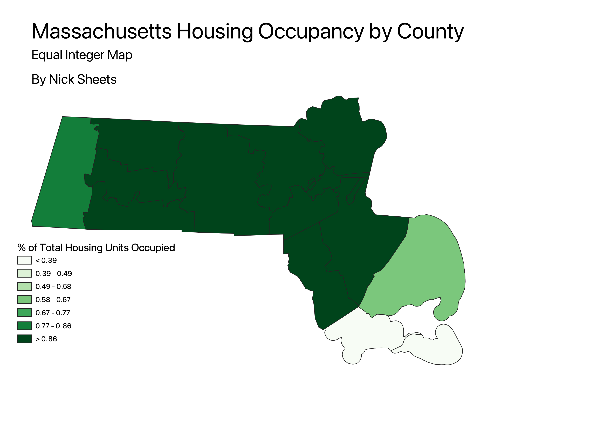
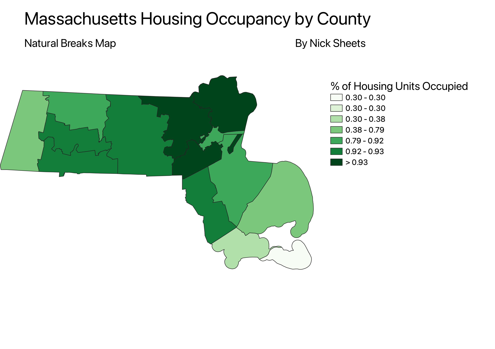
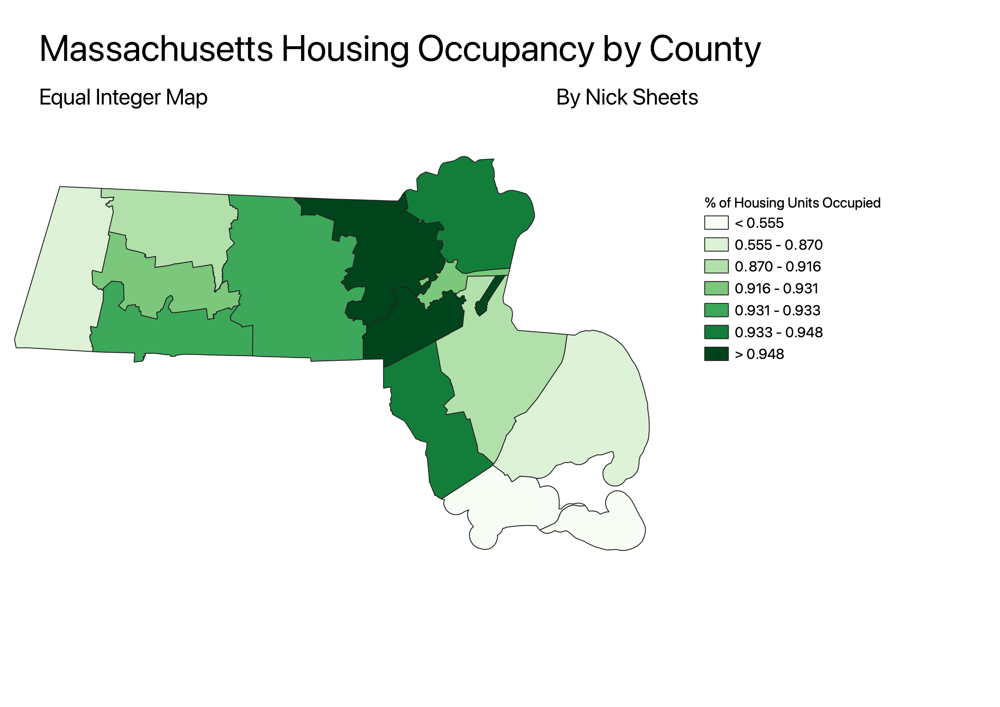

Homework 6 Part 2: Census data ratio classification maps
Nicholas Sheets
These maps display choropleths of housing data in Massachusetts. This dataset shows housing by displaying
the number of occupied housing units that are in each of Massachusetts' 14 counties. The ratio that is used in these maps
was created by using occupied housing units as the field to map, with total number of housing units as the field to be
standardized against. This is done to get an accurate representation of how full each county's housing is with respect to
their capacity to hold housing, not just the counties with the greatest area or number of residents, such as Suffolk
County, where Boston is located.
Ratio Map: Equal Break Classification
The pro of having an equal break classification scheme is that it identifies equal breaks in the data to show
equal groups of data. This prevents any kind of bias in creating the classification scheme and it shows a range
of values well when there is a wide range in the data. The disadvantage of this classification is that it
can be distorted in this map when there are spread out data without much in the middle, the graph may not show
the gradient diistribution well.

Ratio Map: Natural Break Classification
The pro of having a natural break classification scheme is that it identifies natural breaks in the data to show
natural trends that are occuring rather than arbitrary break lines. The disadvantage of this classification is that it
can be distorted in this map when there is low variance, leaving multiple breaks of the same range at the lower
range of values.

Ratio Map: Quantile Classification
The pro of having a quantile classification scheme is that all of the categories (quantiles) are equally
represented in the choropleth map. This allows all of the zones to be represented and allows all of the
counties to be clearly shown. The disadvantage of this map is that it may not be adept at showing clusters of
data are a particular value or if their are outliers in any of the counties, that isn't emphasized well.

Data used for this project
Link to cleaned CSV dataset
Link to geoJSON